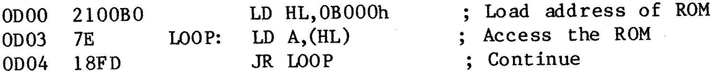

80-Bus News |
July–August 1984 · Volume 3 · Issue 4 |
| Page 30 of 43 |
|---|
exists by what it is in the correct place, and what isn’t. If you can’t even find the EPROM, then the fault may lie in the /CS decoding, or the enable to the output buffer. It is at times like these that a ’scope (or logic probe) is useful, especially when used in conjunction with a complex test program like:
A tight loop like this allows you to synchronise a ’scope easily, and to follow various signals through the circuit.
If everthing checks out to this point, but problems still exist in executing programs in the EPROMs, then it looks like its a case of switching on wait-states. (Or else revising the modifications to generate an earlier /CS signal.)
Climax Problems (No it’s not that type of Agony column)
It has come to my notice that somebody has problems in trying to use the Climax card in a Gemini Network system. After initial suspicions of the software, it was finally realised that some Network systems had been shipped fitted with a particular model of power-supply which did not provide a -5v supply – a fact that didn’t matter with the supplied boards (GM813 CPU + RAM, IVC, etc). The Climax, however, uses 4116 RAMS (which require a −5V supply), and so when this oversight was rectified.... This struck a chord with me, because I can remember doing something similar several years ago. I hadn’t bothered to wire the -12v supply through the backplane because I didn’t use it, and then some months later came to connect a serial printer to the RS232 interface....
[1] Zienkiewicz A.O. “Modification to ‘TYPE A’ RAM board”, INMC80-5 Oct-Dec 1981
Spiral Systems PCG for Nascom 2. Ready to plug into main board. Gives hi-res display 256 x 210. Complete with documentation and software on disk or tape. Has given good service for 1 year, but now replaced by AVC. £30 or offers. Contact C.R. CASE, tel Rugby (____) ______.
Nascom Single Disk Drive + Controller + NAS-DOS + Disks, Nascom AVC, Enhanced BASIC, GM817 75W switch-mode Power Supply. Offers for any of these items to Andy Briggs on (____) ______.
Vero Case to house N2, RAM-B and PSU. Also NAS-SYS 1 and NASPEN PROMs and original documentation. Offers to P Dishart, __-___ ____.
Epson Printer FX80 as new £280. 2-off 32K CMOS battery-backed RAM boards for £100 each. Phone L Harold, ____ ______ (Southend) evenings.
| Page 30 of 43 |
|---|